How open source communities and development work
Vaclav (Vashek) Petras
NCSU
GeoForAll Lab
at the
Center for Geospatial Analytics
North Carolina State University
NCSU GIS 595-601: Tools for open geospatial science
September 13, 2017
Motivation
Motivation for open source
- 80% of developers used open source in past 12 months 1
- 99% in India and China
- numbers greater for students in general
- quality, customizability, no vendor lock-in, flexibility, interoperability 2
- no license fees
- 2014 survey by Forrester Research (presented at All Things Open 2014)
- PCWorld: 10 Reasons Open Source Is Good for Business
Karen Sandler
- executive director of the Software Freedom Conservancy
- a cyborg lawyer 3, 4
- pacemaker/defibrillator implanted
- no review of the software or hardware available
Karen Sandler
Science and software
- software must be available to readers [Nature Methods - 4, 189, 2007]
- source code part of method description [Ince et al. 2012, Morin et al. 2012]
- reproducibility, replicability, and repeatability required [Fehr et al. 2016]
- use of open source tools part of reproducibility [Lees 2012]
Happy users
Users of open source are more happy when using the software.*
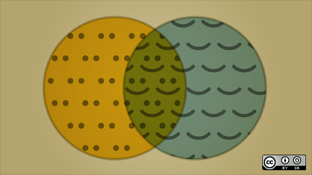Image credit: opensource.com
*No research to support that.
Philosophy
Free, Libre and Open Source
Similar to each other:
- open source software
- free software
- free/libre software
- FS, OS(S), FOSS, FLOSS
Very different from FLOSS:
- proprietary software
- freeware
- shareware
- freemium (clouds and apps)
Free, Libre and Open Source
- free software (FS), open source software (OSS), free and open source software (FOSS), free, libre and open source software (FLOSS)
- the term open source is often used for simplicity
- often used by developers as it refers to a development model
- the term FOSS is often used in geospatial community
- free refers to user's freedom
- open source refers to open development model
- FOSS4G (free and open source software for geospatial)
Logos
Do you know which one is logo of open source?

Answer: None.
Four freedoms
- There are four freedoms that user should have:
- the freedom to use the software for any purpose,
- the freedom to change the software to suit your needs,
- the freedom to share the software,
- the freedom to share the changes you make.
Four freedoms
- the free software definition
- by Richard Stallman and Free Software Foundation
Gratis versus Libre
- for free (at no cost) is not enough
- free software is free to run, study, modify and distribute
- free is a matter of liberty not price
- free as in freedom (as opposed to free as in free beer)
- libre as opposed to gratis
- also: free software != freeware
More than Open Source Code
- having source code is not enough
- Stallman's four freedoms require having the source code
- but just having the source code doesn't imply the freedoms
- open source means also open development, open community, open discussions, …
- not only the possibility to see the source code
- however, source code is publicly and easily accessible
Commercial and FOSS
Commercial and FOSS
Microsoft loves Linux
Apple uses software created by the Open Source community and returns its enhancements to the community.
Why industry uses open source
- vendor neutrality
- proprietary software has a single vendor (vendor lock-in)
- open source software is independent on particular companies
- open source is not influenced by vendor's current business goals
- flexibility (use where you want, when you want)
- interoperability
- open source aims to support standards
- proprietary software often uses propriety formats
- cost (no license fees, no license management)
- low total cost of ownership (includes cost to upgrade or migrate)
- support (many free options available by default)
- money not spent on license fees used for support or features
- influence in development (direct access to developers)
Types of FOSS licenses
- copyleft licenses
- example: GNU GPL
- free software licenses (according to four freedoms by FSF)
- code cannot be combined with proprietary (and closed) code into one program
- examples: Linux, R, GRASS GIS, QGIS
Types of FOSS licenses
- permissive licenses
- examples: BSD, MIT
- source code can be modified, closed and sold as proprietary
- more options for the developer
- can combine the source code and software more freely
- can make the new software proprietary
- less freedoms for the user (might not get the source code, thus freedoms)
- example: GDAL used in QGIS as well as in ArcGIS
Users and FOSS licenses
- licenses are mostly important for the developers
- users don't have to worry about the license
- as long as they know that the software is under some known license
- lists of known licenses:
- this is different from proprietary software
- user must read and agree to EULA or similar type of agreement
- license is used in the meaning license to use
- often paid or limited (or both) for proprietary software
- applies to paid software, freeware, online services, …
Development
GRASS GIS
as an example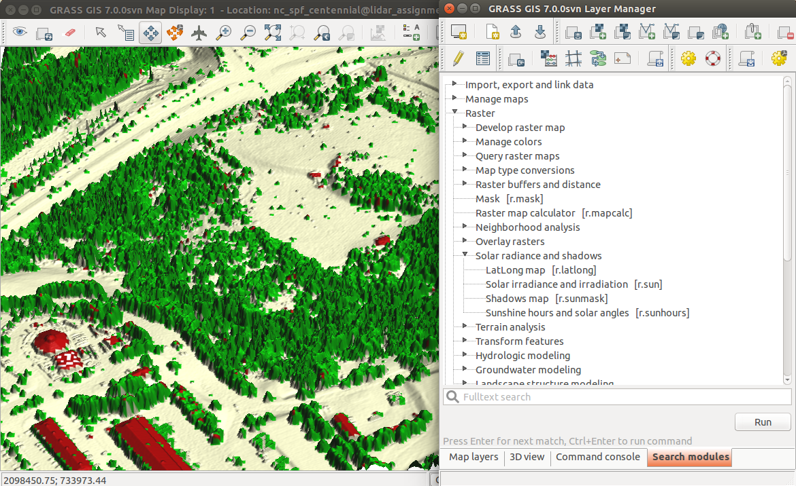
Source code
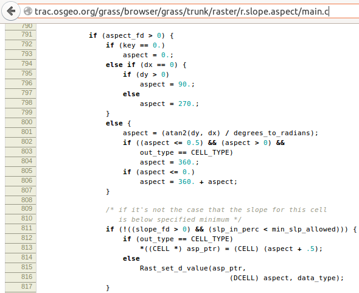
trac.osgeo.org/grass
trac.osgeo.org/grass/...r.slope.aspect...#L790
Changes
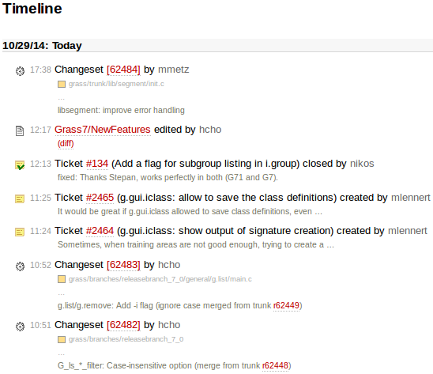
Ticket: Feature request
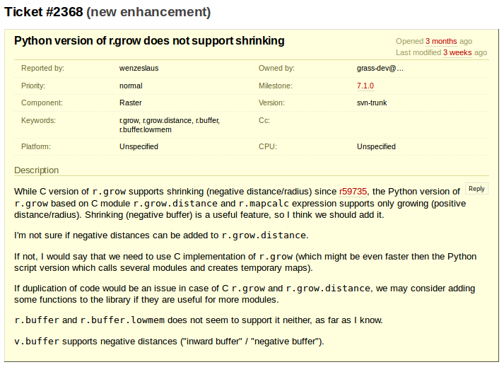
Ticket: Bug report
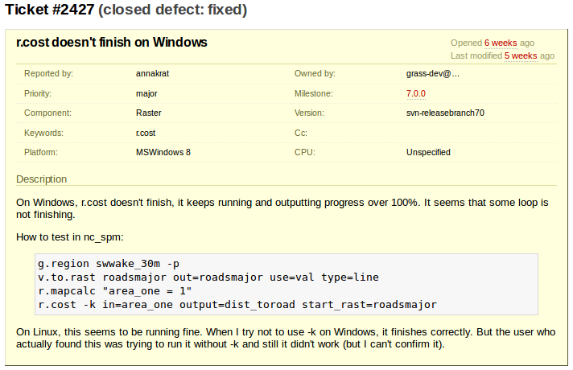
Ticket: Bug report
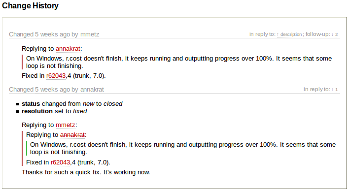
Commit
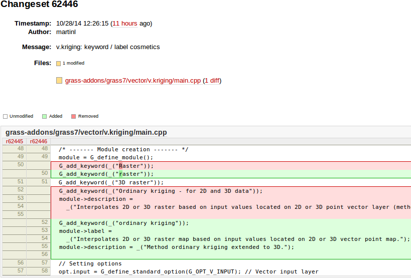
Who can make changes?
Wikipedia:
- everybody can make changes
OpenStreetMap:
- everybody registered can make changes
Open source projects:
- only people with granted access can make changes
- everybody can view changes
- everybody can discuss changes
- everybody can make changes in their local copy
- everybody can make changes and submit them for approval
Peer review: Revert
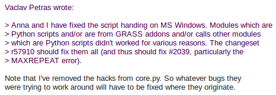
[GRASS-dev] Handling of Python scripts on MS Windows (October, 2013)
Mailing lists

lists.osgeo.org/mailman/listinfo/grass-user
lists.osgeo.org/mailman/listinfo/grass-dev
Other means of communication
- Geographical Information Systems Stack Exchange
- question and answers are ranked to increase quality
- discussions for bug reports and feature requests
- code/community sprints
- ...
Development statistics
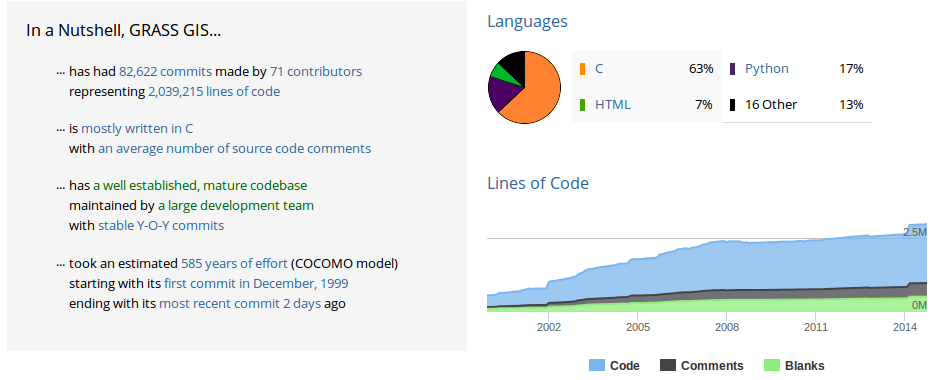
Testing and quality assurance
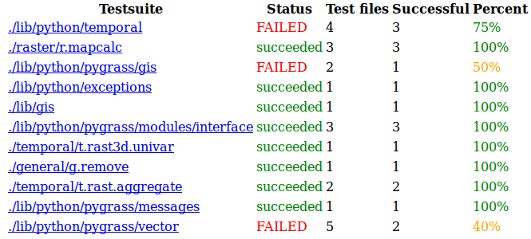
Open source and science
Sharing and reuse
Example: GRASS GIS temporal framework
- analysis and management of spatio-temporal data
- published paper with description and use cases
- created for environmental modeling
- integrated into GRASS GIS
- we all can use it to work with our temporal data
Gebbert, S., Pebesma, E. (2014). TGRASS: A temporal GIS for field based environmental modeling. Environmental Modelling & Software, 53, 1-12.
Sustainable reproducibility and reuse
Example: GRASS GIS r.li (landscape indices)
multiscale analysis of landscape structure
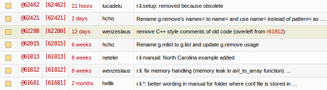
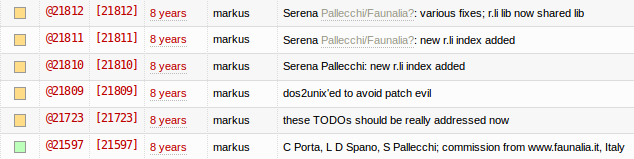
Benefits of open source for science
- research depends on software
- open source is available to anyone
- text by itself does not support easy reproducibility
- source code is suitable for reproducing
- hard to report that something does not work
- pointing out things which are wrong works in open source
Other benefits for academia
- each student has all the tools available, even those which are not used by school
- possibility to work closely with developers
- history of changes and discussions available after years for everybody to learn
- tools to collaborate and share research results
Open source defaults
- there is no inside and outside (everybody can access and contribute)
- shared and reproducible (results and processes)
How to use open source
- if your search for a solution was not successful, ask
- don't wait for feedback form to come in your way
- report bugs if you encounter them
- open source software is something you can change and influence
- if you change something, contribute back
- you cannot maintain your own version
- share your own work to enable reuse
- your research is worth sharing
- incorporate your work into existing projects
- this is the way to preserve it
Acknowledgement
Image credits:
- smile and open here images from opensource.com
- KS photo from allthingsopen.org
- Linux (penguin), GNU, and GPL logos from gnu.org
- CC logo from creativecommons.org
- Open Source Initiative logo from opensource.org
- GRASS GIS logo from opensource.org
- Git logo from git-scm.org
- GitHub (Octocat) logo from octodex.github.com